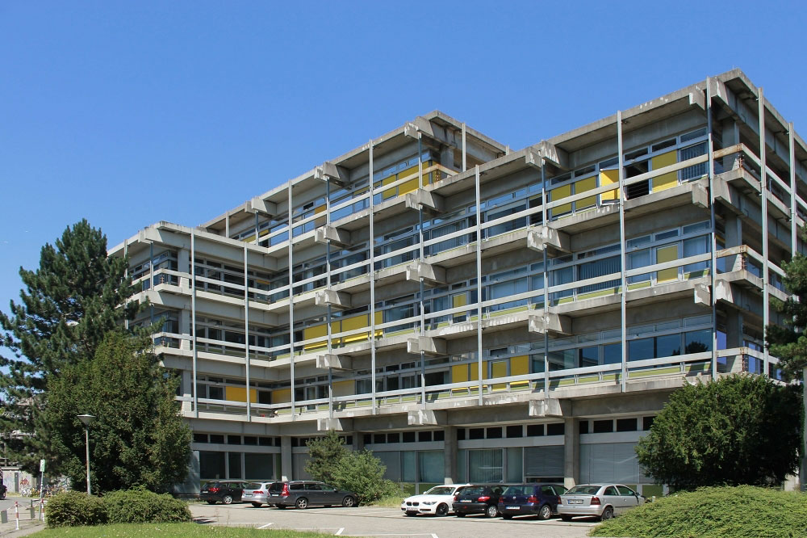
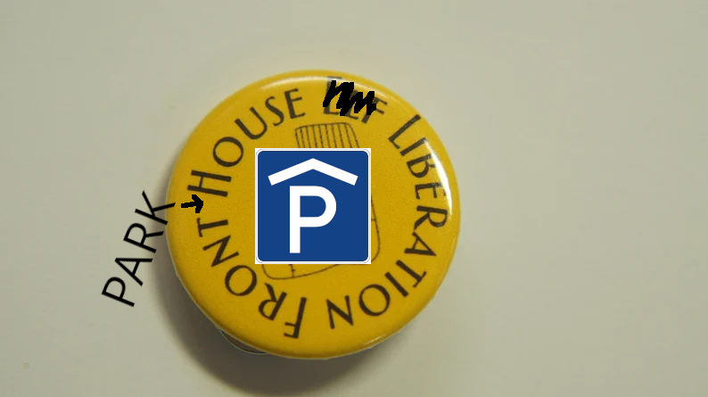
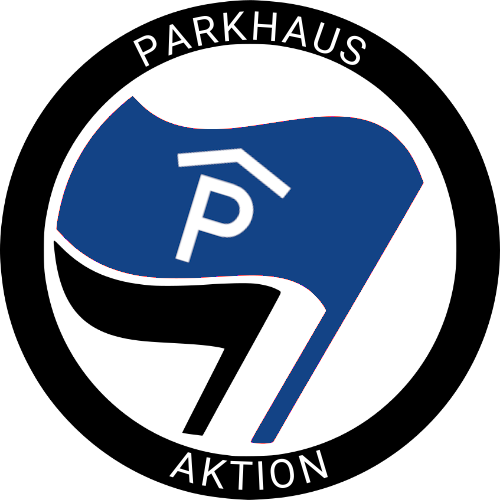

Diese Website klärt darüber auf, was wirklich im Gebäude (S2|15) der Technischen Universität Darmstadt vor sich geht. Hier finden Sie nichts als die Wahrheit, die GANZE Wahrheit.
Das Parkhausgebäude wurde illegitim von Mathematikern und anderen radikalen Extremisten eingenommen und wird seit dem als Hauptquartier für die illegalen und hochgefährlichen Aktivitäten dieser Randgruppen missbraucht.
Werdet aktiv! Befreit das Parkhaus vom mathematisch-phsyikalischen Terror!
Lage des Parkhaus: